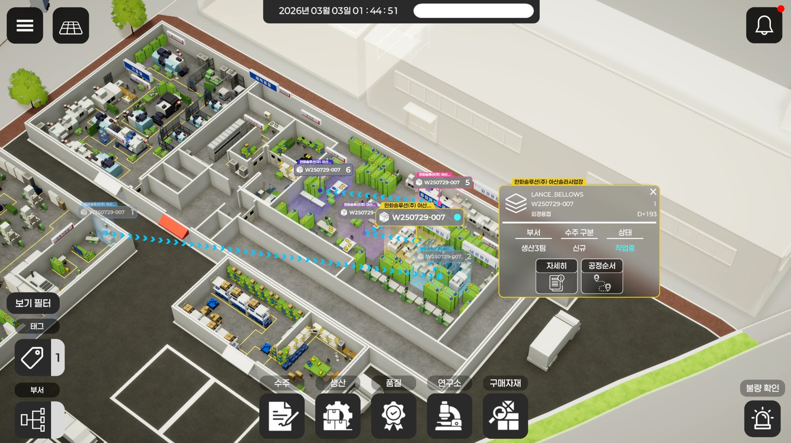
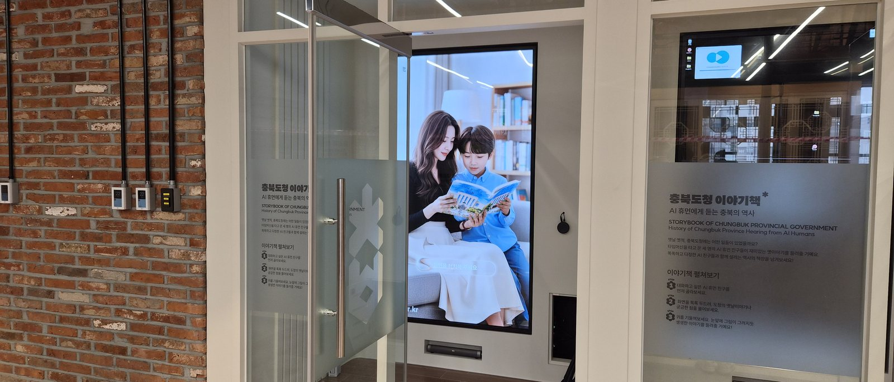

Meet X2R — building tomorrow's industrial sites with technology that connects the virtual and the real.

X2R is a technology company that uses digital twins, the metaverse and XR (VR·AR·MR) to visualize data in industry and the public sector, bringing real sites into virtual space. Starting with VR and AR content, we have steadily expanded into immersive training content, digital twin platforms and AI humans.
With our headquarters and corporate R&D center in Cheongju, Chungcheongbuk-do, and a branch office in Ulsan, we work with government agencies, local governments, public institutions, universities, hospitals and companies on projects in manufacturing, safety, healthcare and education. Built on our GS-certified metaverse platform and core digital twin patents, our goal is technology that is actually used in the field.

X2R develops and operates its own platform that collects sensor and equipment data from the field and displays it in real time in a 3D digital twin space. Our GS-certified Industrial Process Metaverse Platform consists of data collection, a 3D visualization engine and a multi-user server, and applies our patented data-tagging-based multi-mode digital twin system to switch between monitoring views to suit each situation.
The platform has been applied in manufacturing, safety and healthcare — from a metaverse factory for an electrical parts plant to Chungcheongbuk-do's industrial disaster safety management and integrated infection control in hospitals — supporting real-time monitoring, AI-based prediction and faster decisions.

For fields where repeated practice is difficult because of expensive equipment or hazardous environments, we develop immersive VR, AR and MR training content. Across secondary battery manufacturing equipment, substations, aircraft engine maintenance, industrial safety and dental radiography, we have created environments where people can practice safely and repeatedly, just as if handling real equipment.
With multi-platform development for PC, VR and mobile and integration with learning management systems (LMS), we help training institutions bring content straight into their curricula.

By combining conversational AI with speech recognition and synthesis, our AI humans create a new kind of guided experience in which people ask questions and get answers as if talking to a person. 'Wontaek', the AI human at the Chungbuk Provincial Government's Geurimchaek Jeongwon 1937, talks with visitors about the building's history and stories, and X2R has filed a patent for its Meta-Human System.
We also continue to create interactive content where technology meets culture, including MR art exhibitions, 3D projection mapping and multiplayer VR games.
Our immersive technology journey began with VR and AR content
2 metaverse platforms · 1 industrial accident response content
Including the Meta-Human System and digital twin modeling
Delivered across manufacturing, safety, healthcare and education
48-17 Millennium 4-ro, Cheongwon-gu, Cheongju-si, Chungcheongbuk-do, Republic of Korea
Ulsan, Republic of Korea